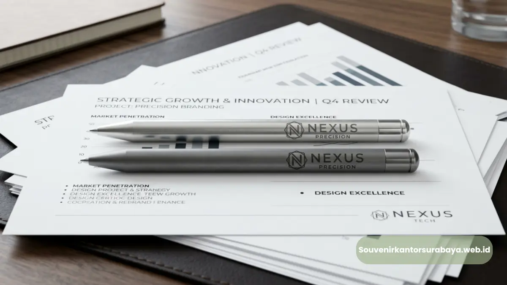

Custom logo pulpen metal stylus dikerjakan via laser engraving dan cetak UV untuk branding perusahaan.
Custom logo pulpen metal stylus untuk branding perusahaan dikerjakan melalui teknik laser engraving atau cetak UV pada permukaan logam, menghasilkan tampilan logo yang presisi dan tahan lama. Proses ini memungkinkan perusahaan menampilkan identitas brand secara konsisten pada setiap unit pulpen yang dibagikan. Pemilihan teknik cetak yang tepat sangat menentukan kualitas akhir logo pada produk.
- Custom logo pulpen metal stylus umumnya menggunakan teknik laser engraving atau cetak UV.
- Ukuran dan posisi logo perlu disesuaikan dengan bentuk badan pulpen agar proporsional.
- Warna material logam memengaruhi tingkat keterbacaan logo yang dicetak.
- Mock up desain sebaiknya disetujui sebelum produksi massal dilakukan.
- souvenirkantorsurabaya.web.id menyediakan layanan custom logo dari konsultasi hingga produksi.
Bagaimana Proses Custom Logo pada Pulpen Metal Stylus Dilakukan?
Proses custom logo pada pulpen metal stylus dimulai dari pengiriman file logo, penyesuaian desain dengan bentuk produk, pembuatan mock up, hingga proses cetak pada unit produksi massal. Setiap tahap memastikan hasil akhir logo tampil presisi dan sesuai identitas brand perusahaan.
Tahapan umum yang biasa dilalui dalam proses custom logo:
- Pengiriman file logo dalam format vektor agar hasil cetak tetap tajam.
- Penyesuaian ukuran logo dengan ruang cetak yang tersedia pada badan pulpen.
- Pembuatan mock up digital untuk gambaran hasil akhir sebelum produksi.
- Persetujuan desain oleh pihak perusahaan sebelum masuk tahap produksi massal.
- Proses cetak dan quality control sebelum produk dikirim ke perusahaan.
Tahapan ini penting dilakukan secara berurutan agar tidak terjadi kesalahan cetak logo pada jumlah pesanan yang besar, yang tentu akan berdampak pada biaya dan waktu produksi.
Teknik Apa yang Digunakan untuk Mencetak Logo pada Pulpen Metal?
Dua teknik yang paling umum digunakan untuk mencetak logo pada pulpen metal adalah laser engraving dan cetak UV, masing-masing dengan karakteristik hasil yang berbeda. Laser engraving mengukir logo langsung pada permukaan logam sehingga hasilnya timbul dan sangat tahan lama, sedangkan cetak UV menempelkan lapisan tinta warna pada permukaan produk.

Hasil cetak logo pulpen metal stylus korporat dengan teknik laser engraving dan cetak UV.
Perbandingan karakteristik kedua teknik ini secara umum:
- Laser engraving menghasilkan tampilan logo monokrom yang elegan dan tahan gesekan.
- Cetak UV memungkinkan logo tampil dengan warna sesuai identitas brand perusahaan.
- Laser engraving lebih cocok untuk kesan formal dan premium pada material logam.
- Cetak UV lebih fleksibel untuk logo dengan banyak elemen warna atau gradasi.
Pemilihan teknik biasanya disesuaikan dengan jenis material pulpen, kompleksitas logo, dan kesan akhir yang ingin ditonjolkan perusahaan pada souvenir yang dibagikan.
Baca Juga (Artikel Utama & Cluster)
Apa yang Perlu Diperhatikan saat Mendesain Logo untuk Pulpen Metal Stylus?
Hal utama yang perlu diperhatikan saat mendesain logo untuk pulpen metal stylus adalah kesederhanaan bentuk logo, karena ruang cetak pada badan pulpen relatif terbatas dibanding media promosi lain seperti banner atau kaos. Logo dengan detail terlalu rumit berisiko tidak terbaca jelas setelah dicetak dalam ukuran kecil.
Beberapa hal yang perlu dipertimbangkan dalam proses desain:
- Sederhanakan elemen grafis yang terlalu detail agar tetap terbaca dalam ukuran kecil.
- Pilih kontras warna antara logo dan warna material pulpen agar logo lebih menonjol.
- Pertimbangkan posisi logo agar tidak terpotong bagian tangan saat pulpen digenggam.
- Sertakan tagline singkat hanya jika ruang cetak memungkinkan tanpa membuat tampilan penuh sesak.
Desain yang terlalu ramai justru dapat menurunkan kesan premium yang seharusnya ditonjolkan oleh pulpen metal stylus sebagai souvenir korporat.
Bagaimana Memastikan Kualitas Custom Logo Sebelum Produksi Massal?
Kualitas custom logo dapat dipastikan melalui proses pengecekan sample sebelum produksi dilakukan dalam jumlah besar, sehingga potensi kesalahan cetak dapat diketahui dan diperbaiki lebih awal. Langkah ini menghindarkan perusahaan dari risiko kerugian akibat produksi massal yang tidak sesuai ekspektasi.
Proses pengecekan kualitas umumnya mencakup:
- Verifikasi ketajaman hasil cetak logo pada sample produk.
- Pengecekan kesesuaian warna logo dengan identitas brand perusahaan.
- Pengujian ketahanan hasil cetak terhadap gesekan dan penggunaan sehari-hari.
- Konfirmasi akhir dari pihak perusahaan sebelum proses produksi massal dimulai.
Dengan proses ini, hasil akhir custom logo pada pulpen metal stylus dapat lebih terjamin kualitasnya sebelum didistribusikan pada event bisnis yang sudah dijadwalkan.

Hawa Nadira
Tim penulis CorporateGifts ID berfokus pada strategi souvenir kantor, merchandise korporat, dan inovasi brand untuk klien B2B.
Keahlian: Branding perusahaan, produksi souvenir, paket event, desain materi promosi.
Artikel Terkait

Vendor Pulpen Metal Stylus Event Bisnis Surabaya
Vendor pulpen metal stylus event bisnis Surabaya menyediakan alat tulis premium berbahan logam dengan ujung stylus untuk layar sentuh.
Baca Selengkapnya
Manfaat Pulpen Metal Stylus untuk Souvenir Event Korporat
Manfaat pulpen metal stylus untuk souvenir event korporat: kesan premium, fungsi ganda alat tulis & stylus, serta daya tahan material.
Baca Selengkapnya
Paket Seminar Kit Lengkap untuk Kantor di Surabaya
Paket seminar kit kantor Surabaya adalah satu paket perlengkapan acara yang biasanya terdiri dari lanyard, id card, notebook, dan pulpen.
Baca Selengkapnya